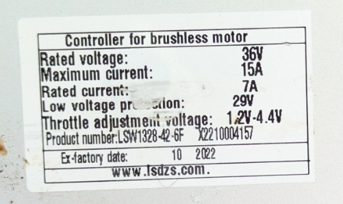
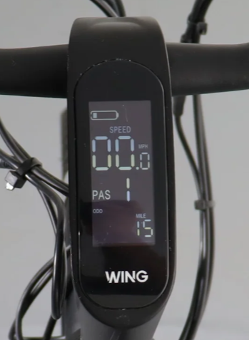

Replacement Parts

36v Lithium Battery (Alibaba)
A compatible EEL mini lithium battery. Note: This links to Alibaba where I successfully purchased mine. Sourcing single items here can be challenging, but it is a match.
View on Alibaba
EEL Battery Option (Amazon)
An alternative battery listed on Amazon. Note: I have not tested this one, it cannot be shipped to NY, and the exact physical size is unclear, but it may be easier than Alibaba.
View on Amazon
Motor Controller
The electronic brain of the bike. I am currently confirming the exact compatible replacement unit. In the meantime, you can contact sales@lsdzs.com for controller information.
Email SupplierHandlebar Display (Newer Models)
A King Meter compatible replacement display unit for newer model ebikes to keep track of speed, assist levels, and battery life.
View Specs
Handlebar Display (Older Models)
Sourcing an exact match for the older style LCD displays. Check back soon for the direct replacement link.
Link Pending
Invoxia Cellular GPS Tracker
An amazing real-time cellular tracker (great if you don't use Apple products). Note: It's hard to hide inside the frame while keeping it accessible for recharging, but it works well for tracking rides and theft recovery.
View on Amazon
Mechanical Brake Caliper
A reliable mechanical disc brake caliper. Note: This exact part is universal and works perfectly for both the front and rear wheels.
View on Amazon
7 Gear Rear Derailleur
A replacement 7-speed rear derailleur to keep your drivetrain shifting smoothly across all gears.
View on Amazon
7 Gear Bike Shift Lever (Right Side)
A compatible right-side 7-speed shift lever to ensure precise and reliable gear changes on the road.
View on Amazon
7 Speed Freewheel Cartridge
A 7-speed freewheel cassette to restore your bike's gearing, pedaling efficiency, and power transfer.
View on Amazon
26" Bicycle Rim
A structurally sound 26-inch aluminum replacement rim for rebuilding or swapping out a damaged wheel.
View on Amazon
26" Black Tires
Replacement 26-inch black tires offering great traction and longevity for commuting and city riding.
View on Amazon
26" Tire Inner Tube
Durable 26-inch replacement inner tubes designed to handle the extra weight and speed of an electric bike.
View on Amazon
OEM Platform Pedals
Direct replacements for the original stock Wellgo platform pedals supplied with the bike.
View on Amazon
Platform Pedals (Author's Pick)
A highly recommended non-OEM pedal upgrade. These provide much better grip, a wider platform, and greater durability than the stock parts.
View on Amazon
OEM Handlebar Grips
A reliable replacement for the original stock grips. Note: This is the 140mm size used on some models, so measure yours first.
View on Amazon
15L Premium Panniers
Excellent 15-liter pannier bags for commuting and storage. Note: You must have the OEM Wing Rear Rack installed to mount these properly.
View on Amazon
Budget Pannier Option
A highly cost-effective alternative to premium bags. I personally used this exact set for years without issue until they were stolen and I upgraded.
View on Amazon
Kickstand
A direct replacement kickstand to keep your ebike upright and stable when parked.
View on AmazonMaintenance & Troubleshooting
Wing Owner's Manual
Download the original Wing Bikes documentation for general operation, maintenance, and safety guidelines.
Download PDFAssembly Manual v2.0.2
Download the official assembly instructions, including detailed wiring diagrams and setup steps.
Download PDFTire Pressure
Maintaining proper tire pressure is crucial for maximizing your battery range, ensuring predictable handling, and preventing pinch flats.
- Recommended: 55-60 PSI
- Minimum: 40 PSI
- Maximum: 65 PSI
Error Codes (Freedom ST / X)
If your bike throws an error code on the LCD, reference this chart to diagnose the issue.
| Code | Definition |
|---|---|
| 21 | Current Abnormality |
| 22 | Throttle Abnormality |
| 23 | Motor Abnormality |
| 24 | Motor Hall Signal Abnormality |
| 25 | Brake Abnormality |
| 30 | Communication Abnormality |
Older Model Error Codes
While the parts on this page are for the ST and X models, here is the error chart for older models (Freedom 2, Fatty 2, S2) in case you or another rider need it.
| Code | Definition |
|---|---|
| 02 / 37 | Brake Problem |
| 03 | PAS Sensor Problem |
| 04 | Walk Assist Problem |
| 05 | Cruise Problem |
| 06 | Battery Low Voltage |
| 07 | Motor Problem |
| 08 / 34 | Throttle Problem |
| 09 | Controller Problem |
| 10 | Comm. Receive Problem |
| 11 | Comm. Send Problem |
| 12 | BMS Comm. Problem |
| 13 | Light Problem |
| 30 | Communication Problem |
| 33 | Current Problem |
| 35 | Motor Phase Problem |
| 36 | Motor Hall Signal Problem |